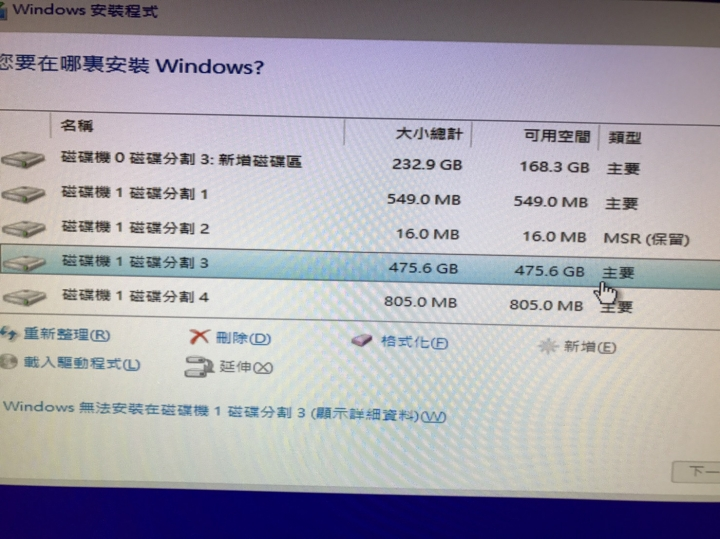
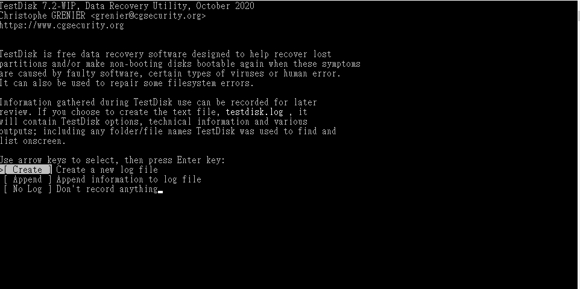
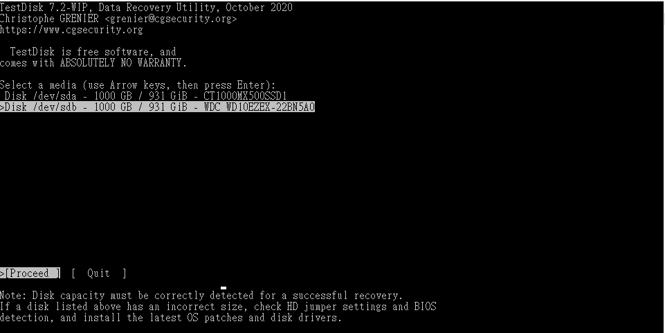
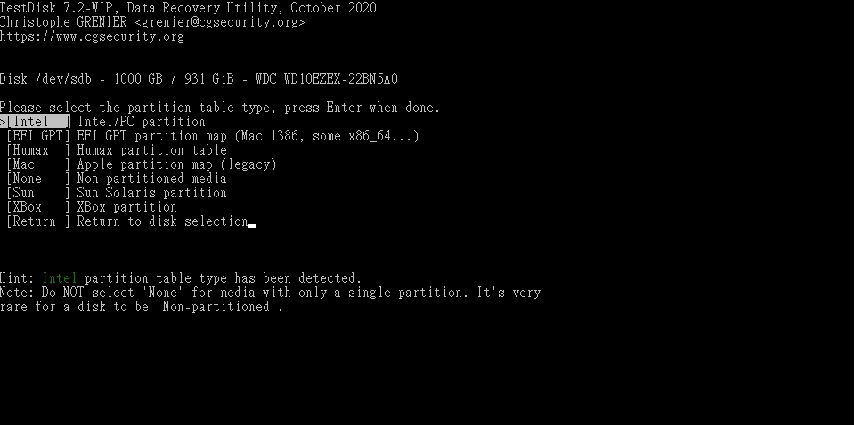
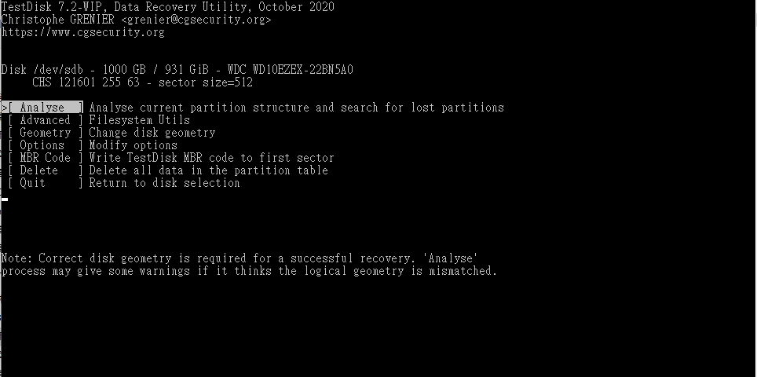
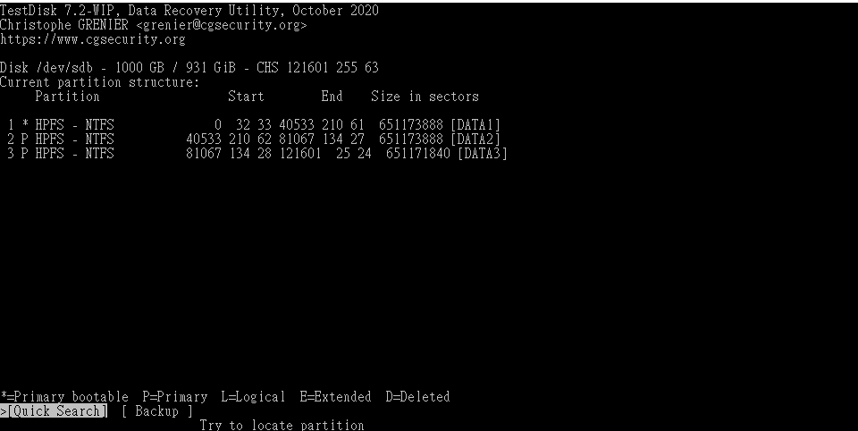
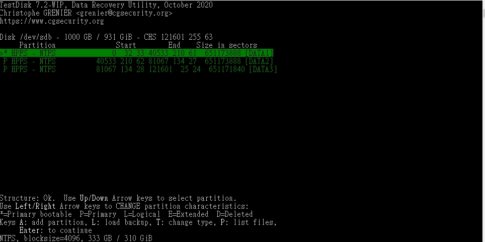
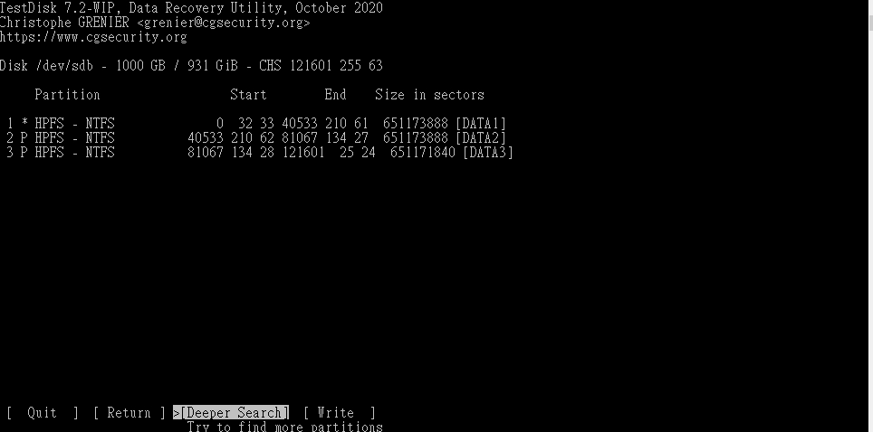

這禮拜都在重灌電腦
但在重灌的時候發生了一件事!!
就是我在對硬碟做操作的時候….
選錯硬碟去 clean 了!!阿阿阿阿…當下差點哭出來
還好經過一些爬文有找到解決方式
順便記錄一下
首先放入作業系統光碟或使用開機隨身碟開機後
到某一個步驟
會有一個選擇作業系統安裝在哪一個硬碟的畫面
在這個地方按 Shift + F10

就可以叫出一個 cmd 的畫面
然後在那邊輸入 diskpart 就可以對硬碟區做一些操作
官方文件說明
https://docs.microsoft.com/zh-tw/windows-server/administration/windows-commands/diskpart
然後選擇硬碟的部分，我不小心選到了我的 HDD 資料碟並 clean 了他 QQ
當下真的崩潰，不過可能也是對指令不熟悉才會那麼緊張
本來是打說花錢買軟體來救了
但剛好在爬文的過程中
看到了有人使用 testdisk 去把硬碟的資料救援了回來
選擇 Create 後按 Enter

選擇要回復的硬碟

選擇 Intel

選擇 Analyse

選擇 Quick Start
我是拆三個磁區所以沒錯

在這邊繼續按 Enter

在這個地方按 Write 就會開始復原了
